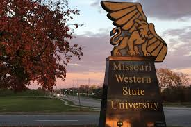
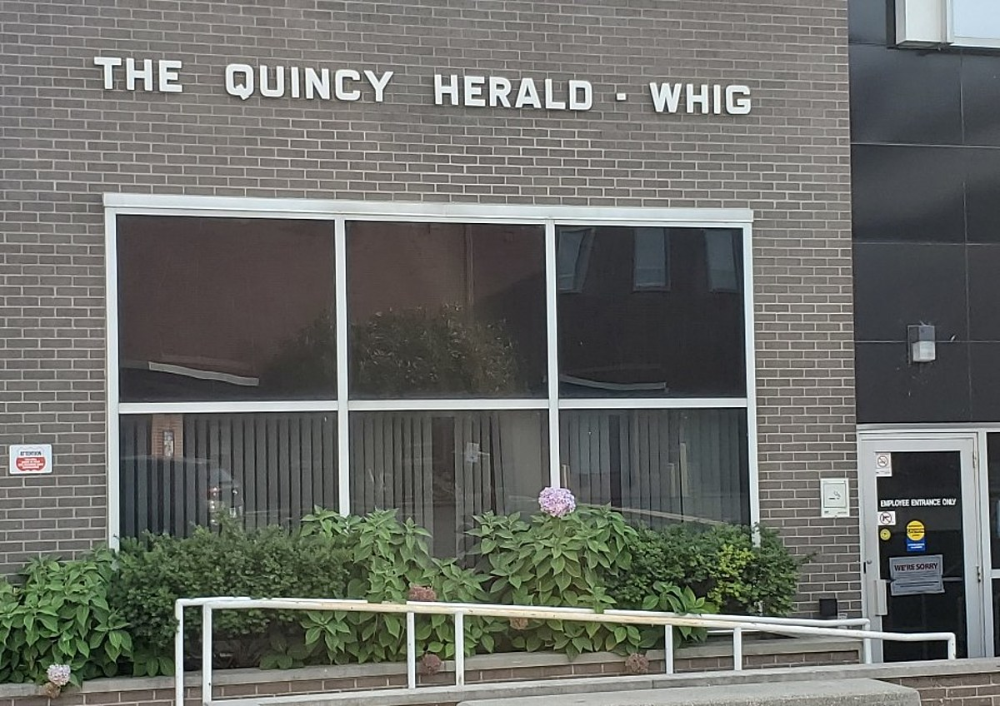
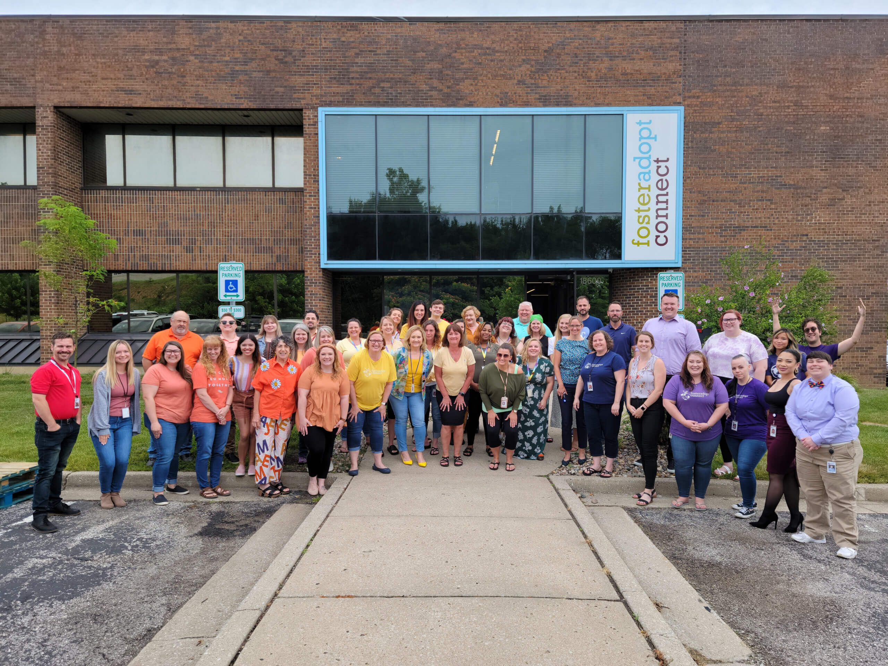

Childhood
I was born in a small town called Troy, MO. Since Troy isn't too far from St. Louis, I remember always going to see the Cardinals play. Troy is such a rural small town. I remember being intimidated by the big city. Surprisingly, it wasn't until I was a teenager that I actually got to tour The Arch.
Teen
Once I became a teenager, I got my first car and I got my first job at a local grocery store. It was important to me to get a job and have car. I really enjoyed some of the freedom that came with it. After about a year, I quit the grocery store and became a daycare teacher. I loved working with the kids. When I left for college, I would come back during breaks to work but shortly realized I wanted to do something different.
College
I got accepted to Missouri Western State University in St. Joesph, MO. I lived with my best friend since middle school, Colleen. In my first year, I joined a sorority. I am proud to be a member of Alpha Gamma Delta. At MWSU, I studied Graphic Design. I love the tools that my professors gave me in order to succeed in the real world. It has helped me in numerous ways. I graduated Spring 2021 with a degree in Graphic Design and a minor in Photography.
First Adult Job
During my final year of college, I applied to numerous jobs. It had to be well over 200! I felt behind because I didn't have a job offer yet. I would have interviews but it never seemed to go anywhere. After graduation, I moved back home. During that first week I was home I got a call about a job offer. It was this small town called Quincy, IL. This was perfect, because my grandparents live under 30 minutes away. I was able to move in with my grandparents for a while until I saved money and found an apartment. I worked at the Quincy Herald-Whig as a paginator. Paginator is honestly just a fancy name for Page Designer. I would lay out the newspaper every day. This job became very stressful and my mental health started to tank. I knew I needed a new job fast. So I started the whole proccess over again.
Current
After starting the job searching proccess over, It seemed to be going down the same road. I was scared I wouldn't find anything and that I would be stuck at this job that I hated. I decided to widen my job search and started applying to places in the KC area. Next thing I know, I have a job offer. I am now a Graphic Design Coordinator for FosterAdopt Connect. This job makes me feel amazing and I couldn't ask for a better team to work with. I have been working here almost a year and I can't wait to see what else is in store for me. I am also taking classes through LaunchCode. I want to enhance my coding skills to be able to help me in my current job. Maybe in the future it will help me get a tech job, but that is future Jade's concern! For now, I am extremely happy where I am and couldn't be more excited.
